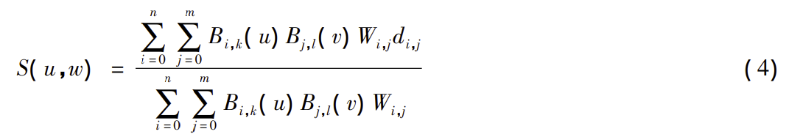

2021-12-21工作记录

工作记录
看论文
- [1]吴旭, 卢凌雯, 梁栋栋, 等. 基于点云数据的曲面重建算法比较研究[J]. 安徽师范大学学报: 自然科学版, 2019, 42(1): 46-50.
第一篇论文的总结
本文从点云表面重建方式的角度
介绍了现有的针对点云数据曲面重建算法的种类：
- 网格曲面
- 贪婪投影三角化算法
- 隐式曲面
- 移动立方体算法
- 泊松方程算法
- 参数曲面
- NUＲBS 算法
比较了四种算法针对不同目标物重建的优劣
结果表明：
基于 NUＲBS 参数曲面重建的方式最佳，
基于贪婪投影三角化网格曲面重建的方式其次，
基于移动立方体与基于泊松方程隐式曲面重建方式的时间复杂度与空间复杂度较大，且重建后的 点云模型误差也较大
下面这部分分类可以不看
从现有研究来看，曲面重构大致可以分为
显式曲面重构提出较早，需要先将点云参数化，然后再进行曲面重构。它一般不能用单个 曲面来直接拟合点云，比如 NUＲBS 算法需要先将点云分割成不同区域，然后分别拟合各自的曲面，最后将 拟合的各曲面进行拼合得到完整曲面。
隐式曲面重构利用隐式函数得到逼近点云的等值曲面，相比显 式曲面重构方法，隐式曲面重构更适用于重构复杂拓扑形状的曲面，且重构的曲面具有很好的封闭性和完整 性。
两类方法[2]。
除此之外，刘含波［3］等对曲面重建方法有两种分类方式: 根据生成的表面是否经过原始采样点，分为
基于插值的表面重建基于逼近的表面重建;
根据重建过程中所依赖的插值点的信息，分为
基于全局准则的整体重建基于局部准则的局部重建
宋大虎等［4］根据现有算法的特点，将曲面重建算法分为
隐式曲面算法、参数曲面算法基于学习的方式Delaunay 三角剖分算法。
1 算法描述
1.1 基于贪婪算法的网格曲面重建
贪婪算法常用于将复杂问题简单化，使问题变得更容易解决［13］。贪婪算法的性能影响最大的因素是贪 婪三大准则［14］:
- 最近贪婪准则;
- 近邻贪婪准则;
- 定向贪婪准则。
基于贪婪算法的网格曲面重建的核心思想:
- 获得各点的连接关系。将已知点通过法线投影至相应 平面，再对投影得到的点作 Delauany 三角化处理，经软件处理得到各点关系矩阵。
- 生成完整的三角网格 曲面。获得各点连接关系后，通过基于 Delauany 的空间区域增长算法，经初始曲面不断扩张边界，生成结 果。
- 形成最后的曲面重建模型。最后按照投影点云的相互关系完成各原始三维点间的拓扑连接获得 结果
1.2 基于移动立方体隐式曲面重建算法
移动立方体算法常用于医学图像可视化三维重建，处理的对象为离散的三维空间规则数据场，主要应用 于三维重建的可视化。由于该算法具有步进式的特点，故被称为移动立方体( Marching Cubes) 算法［15］。 Lorensond 等人于 1987 年提出的 Marching Cubes 算法是一种流行的从体数据中提取等值面的算法［16］，
该算 法对每个被处理的体素，以三角面片表示其内部的等值面，它的算法核心思想如下。
- 三维数据场中构造体素。通过选取立方体中上下两层切片图像形成三维数据场。
- 判断立方体 与等值面交点。通过 8 个顶点函数值与相应等值面阈值的比较，分析生成相应的索引表。
- 获得各顶点 处的法向量。通过索引表计算出交点处的坐标，从而获得各处的法向量。
- 曲面重建。由所求三角面片 各顶点处的坐标和法向量绘制出等值面，最后实现模型的重构。
1.3 基于泊松方程的隐式曲面重建算法
泊松方程是有着重要应用地位的偏微分方程，应用领域很广，如高动态范围图像的调和映射、图像区域 的无缝编辑、流体力学、网格编辑等，其中多重泊松方程已在高效 GPU 计算得到了很好的应用［17］。
1． 4 基于 NUＲBS 技术的曲面重建算法
20 世纪 80 年代后期，Pieg 和 Tiller 经过研究将有理 B 样条延伸为非均匀有理 B 样条( Nonuniform Ｒational B-Spline，NUＲBS) 曲线和曲面。
如今 NUＲBS 已成为自由曲线和曲面表征的应用较为广泛的技术，国际标准化协会( ISO) 已将 NUＲBS 的方式作为定义工业产品几何形状的唯一数学方法［18］。
NUＲBS 曲面的表达［19］如公式( 4) :

总结
整篇论文参考价值不大，基本就是介绍几个常用算法很分类。